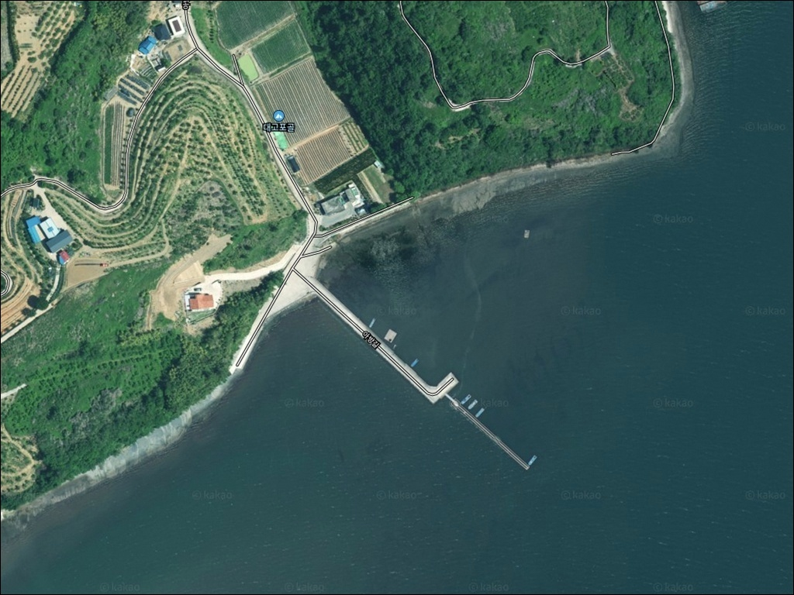
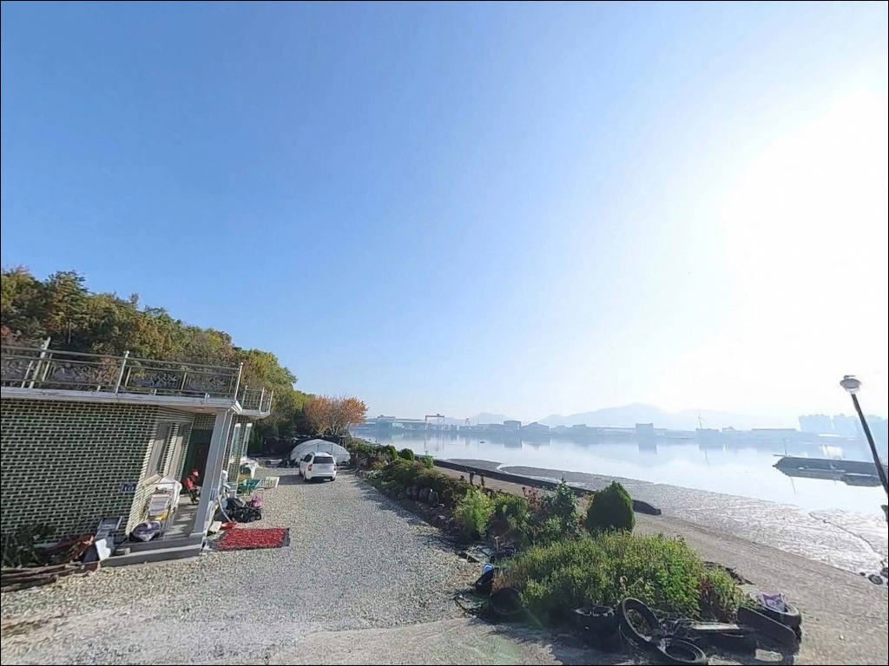
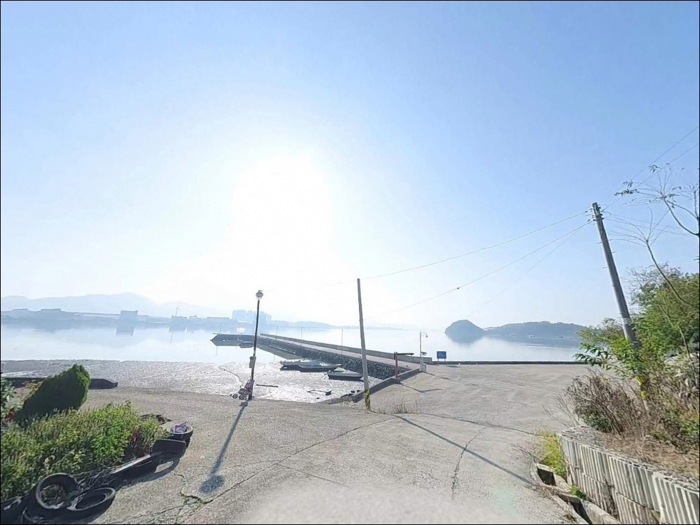
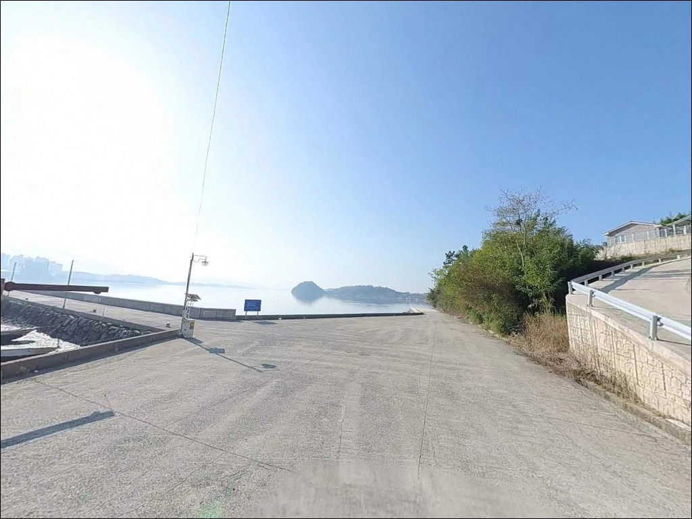
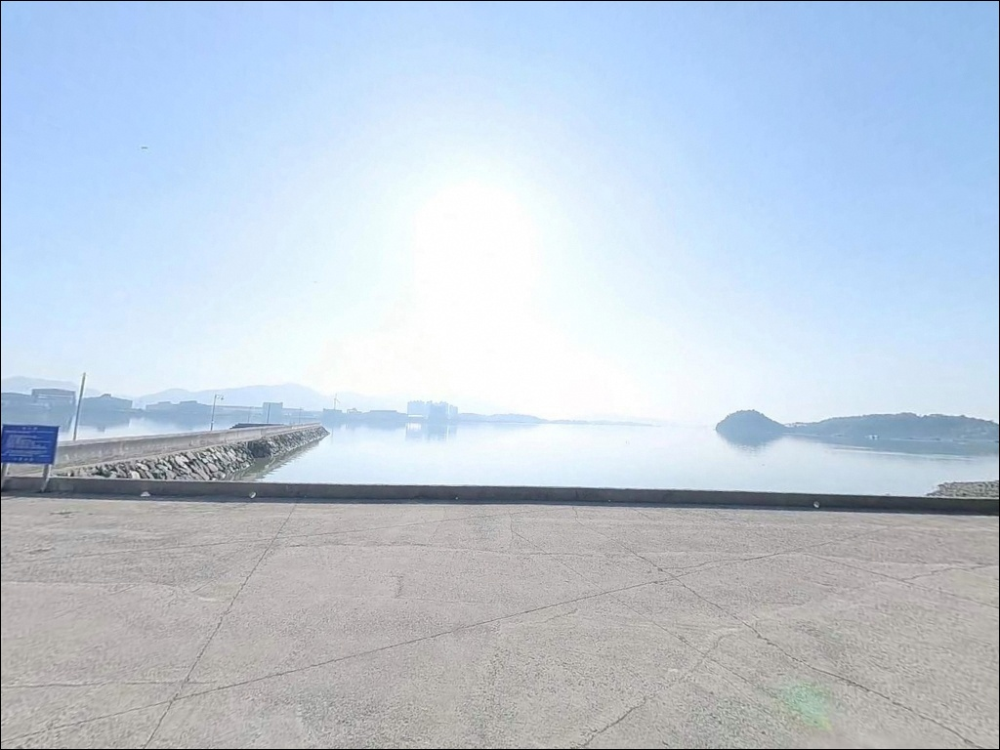
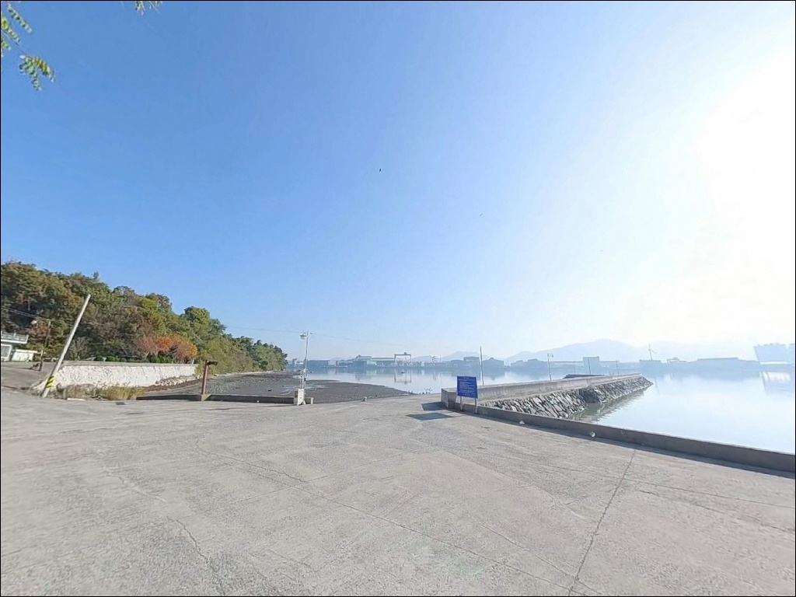
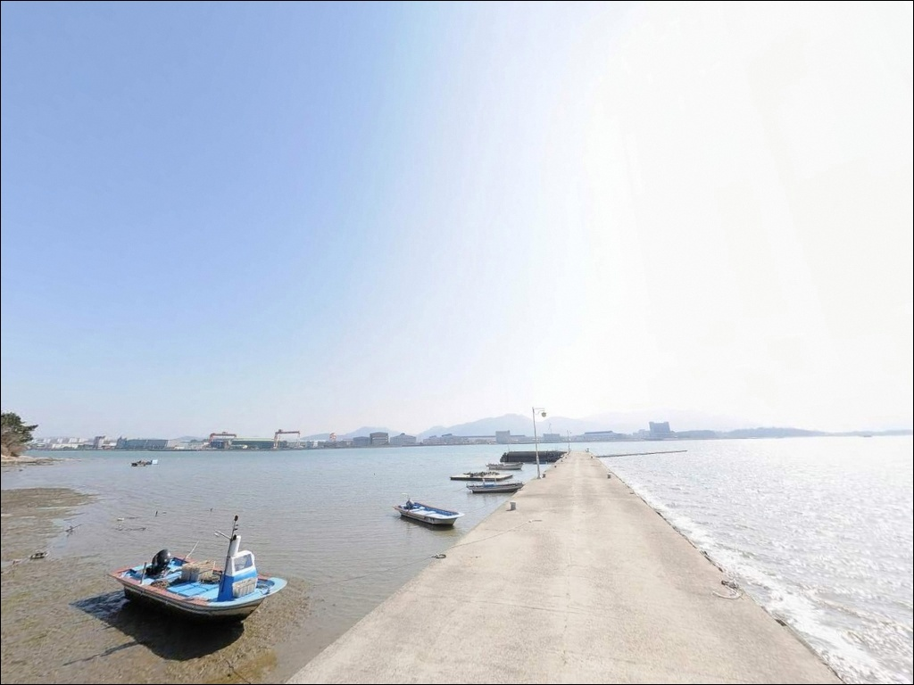
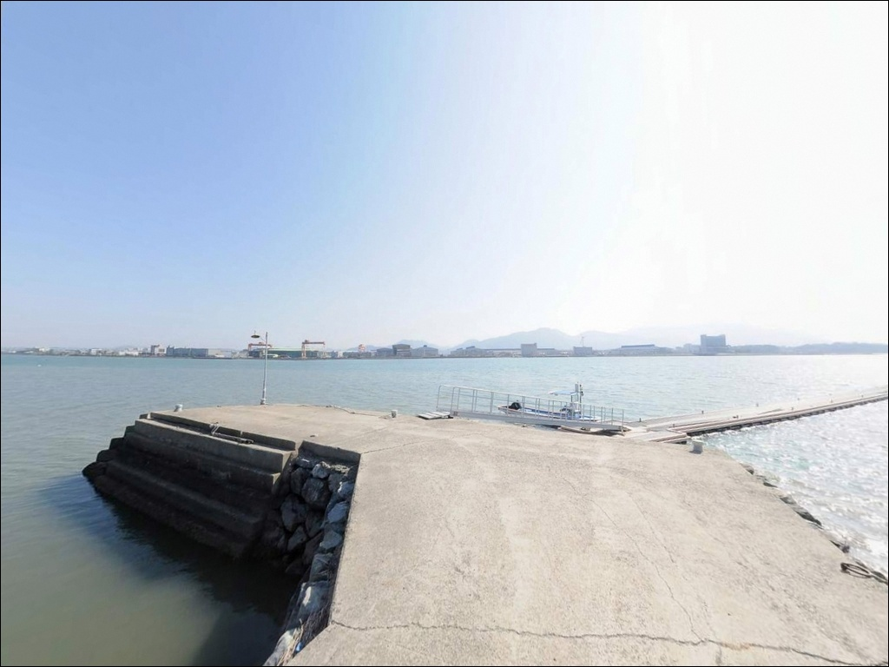
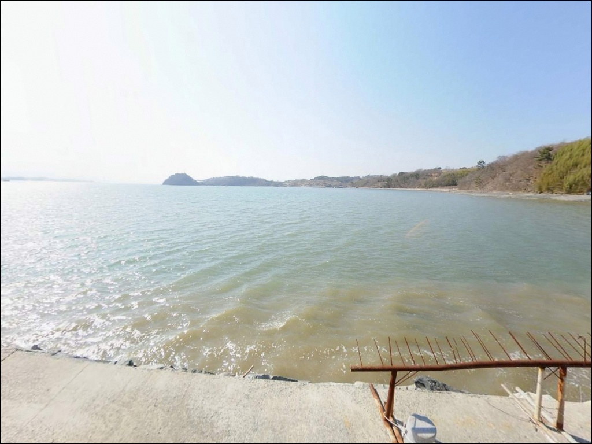

간조 때 가면 갯벌만 만나는 중항리선착장, 중들물에 들어오는 원투낚시 수심
이 페이지에는 광고(제휴 링크 포함)가 있으며, 광고 링크를 통해 구매하면 운영자가 판매 수익 또는 수수료를 받을 수 있습니다. 포인트 사진: 카카오맵 스카이뷰·로드뷰. 이 페이지의 지도·사진 이미지는 카카오맵의 실제 서비스 이미지와 다를 수 있습니다.


포인트 안내
중항리선착장
경남 사천시 곤양면 중항리 1055-1
사천만 내만 깊숙이 자리한 이 선착장은
간조 때 갯벌이 드러나는 구조입니다.
물때 확인 없이 진입하면
낚시 자리 자체가 사라지는 상황을
마주칠 수 있습니다.
이 글은 중항리선착장의 지형 구조,
진입 여건, 낚시 방식 적합성,
차박 체류 가능성을 중심으로 정리했습니다.
조황 단정이나 특정 어종 보장은
이 글의 범위에 포함되지 않습니다.

1. 진입 동선과 포인트 접근성
경남 사천시 곤양면 중항리로 진입하는 길은
곤양면 해안도로를 따라
마을 안쪽으로 이어지는 구조입니다.
전체 도로는 포장된 편도 1차선 수준으로,
일반 승용차 기준 진입에는
큰 어려움이 없는 편입니다.
다만 마을 진입로 후반부는
농어촌 특성상 폭이 좁아지는 구간이 있습니다.
차박용 대형 차량이나 루프탑 텐트 장착 차량이라면
출발 전 위성지도로 마을 안쪽 도로를
미리 확인하는 것이 기본입니다.
선착장 인근에는 어선 접안용 공터와
마을 도로 가장자리 공간이
주차 후보로 활용됩니다.
회차는 공터 규모가 작아
승용차 기준 가능한 수준이며,
선착장 어선 진출입 동선과 겹치지 않는 자리를
먼저 확인해야 합니다.

2. 차박 환경과 야간 체류 여건
중항리 마을은 사천만 해안선을 따라
형성된 소규모 어촌입니다.
관광지와 거리가 있는 내만 안쪽이라
야간 차량 통행은 드문 편이지만,
민가와 인접한 구조여서
완전한 고립형 차박지와는 다릅니다.
선착장 주변 공터를 차박 공간으로 활용하는 것은
가능성이 있지만, 규모가 크지 않아
1~2대 수준의 공간으로 봐야 합니다.
야간 가로등은 마을 생활 조명 수준으로
일부 존재하나,
선착장 끝단으로 갈수록 어두운 편이라
개인 헤드랜턴은 필수입니다.
마을 주민 생활권과 인접해 있으므로
야간 발전기 사용이나 음악 재생은 삼가야 하며,
쓰레기는 반드시 되가져가는 것이
이런 소규모 어촌 선착장에서의
기본 매너입니다.


3. 주변 편의시설 및 인프라 현황
선착장 반경 1km 이내에는
편의점이나 마트를 기대하기 어렵습니다.
반경 3km권인 곤양면 성내리 소재지에
소규모 상점이 있으나,
24시간 운영 여부는 현장에서 확인해야 합니다.
출발 전에 사천 시내 방면에서
식수, 얼음, 낚시 미끼, 연료를
충분히 준비하고 진입하는 방식이
현실적입니다.
삼천포 시내권까지 이동하면
낚시점과 편의시설이 집중되어 있어,
부족한 소품은 그 방향으로
이동해 조달하는 편이 효율적입니다.

4. 진입 전 반드시 챙겨야 할 준비사항
중항리선착장 방문에서 가장 먼저 확인할 것은
물때입니다.
사천만 내만 특성상 간조 때는
선착장 발밑 갯벌이 드러나
채비를 넣을 수심 자체가 사라집니다.
바다타임에서 중항리 인근 물때를 확인하고
중들물에서 만조 전후 구간에
자리를 잡는 것이 기본 전략입니다.
내만 갯벌 지형이라
원투 채비는 바닥 걸림이 상대적으로 적은 편이지만,
물이 덜 든 시간대에는
채비가 갯벌에 박히는 경우도 있습니다.
여분 채비를 넉넉히 준비하고,
출조 전 사천 곤양면 일대 조황 검색을
먼저 해두는 것이 좋습니다.
어촌 마을 선착장이라
어선 작업과 진출입이 수시로 이루어집니다.
어선 동선을 방해하지 않는 자리 선택이
이 포인트에서의 기본 매너이며,
야간에는 구명조끼와 헤드랜턴을
반드시 갖춰야 합니다.

5. 지형 기반 낚시 여건 분석
중항리선착장은 사천만 안쪽
내만 깊숙한 위치에 자리합니다.
외해가 아닌 만 내부 구조여서
파도 직접 노출이 거의 없고,
수면이 잔잔한 정온 수역입니다.
수심은 선착장 발밑 기준
2~5m 안팎으로 완만하게 이어지는 구조이며,
바닥은 갯벌과 모래가 혼재합니다.
조류는 사천만 들물·날물 흐름을 따라
완만하게 움직입니다.
급격한 조류보다는 천천히 흐르는 조류로,
찌낚시 채비가 자연스럽게 흘러가는
조건을 갖추고 있습니다.
선착장 끝단 부근에서
수심 변화 구간이 형성되는 편이어서,
끝단 주변이 원투 자리로 적합한 구조입니다.
이 일대 사천만 해역에서는
붕장어·숭어·도다리류가 기대되는 어종이며,
가을 이후 내만권 감성돔 출현도
이 해역 패턴에서 배제할 수 없습니다.
다만 이 포인트에 대한 직접적인 조황 기록이 없어
출조 전에 사천 곤양면 일대 조황을
반드시 검색해 보시기 바랍니다.


6. 포인트에 어울리는 낚시 스타일
이 포인트 지형에 가장 잘 맞는 방식은
원투낚시입니다.
갯벌·모래 혼재 바닥에서
청갯지렁이·참갯지렁이 미끼로
선착장 전면이나 끝단 쪽으로
중단거리 캐스팅을 구사하면
붕장어·도다리류 바닥층 공략이 가능합니다.
내만이므로 원거리 장타보다
30~50m 안팎의 투척으로 충분합니다.
민장대나 릴찌낚시도 이 포인트 구조에 맞습니다.
조류가 강하지 않은 내만 환경에서
1~2m 수심을 설정해 찌를 흘리는 방식으로
숭어류 공략이 가능한 편입니다.
선착장 안벽 측면을 따라
천천히 흘려보내는 방식이
이 지형의 완만한 조류 흐름과 어울립니다.
야간에는 소형 지그헤드 채비를 이용한
볼락 라이트게임도 시도해볼 만한 스타일입니다.
선착장 구조물 그늘과 안벽 주변을 타깃으로
소형 웜을 천천히 끌어오는 방식이
이 구조의 포인트에서 일반적으로 유효합니다.
만조 전후 조류가 움직이는 타이밍에
집중하는 것이 효율적입니다.

7. 인근 포인트가 여의치 않을 때의 플랜 B
중항리선착장에서 수심이 확보되지 않거나
주차 여건이 맞지 않을 때
가장 먼저 이동할 수 있는 곳은
안도항입니다.
중항리 인근 같은 곤양면 해역에 있는
어촌정주어항으로,
방파제와 선착장 구조가 갖춰져 있어
원투·루어·찌낚시 모두 운용 가능한 곳입니다.
같은 방향으로 3km 이내에
점복개항도 있습니다.
이 역시 곤양면 내 어촌정주어항으로
만 입구와 수로 방향에 따라
조류가 흐르는 구간이 형성되는 편이어서,
중항리선착장보다 수심이 확보되는
조건을 기대해볼 수 있습니다.
삼천포 방면으로 약 10km 이동하면
낚시 인프라가 집중되어 있어,
미끼 조달이나 장비 보충도
이 동선에서 해결됩니다.
안도항 → 점복개항 → 삼천포권 순으로
이동 동선을 잡으면
하루 안에 여러 포인트를
탐색할 수 있습니다.

물때만 맞추면
조용히 낚시 펼치기 좋은 선착장입니다
원투낚시나 민장대 찌낚시를
조용하게 즐기는 낚시인이라면
중항리선착장의 내만 지형 조건이
잘 맞는 편입니다.
파도 걱정 없이 잔잔한 수면에서
천천히 낚시하기 좋은 구조이며,
주변에 알려진 포인트가 적어
자리 다툼 없이 여유롭게 자리 잡을 수 있습니다.
다만 물때 확인 없이 진입했다가
간조 갯벌을 마주치면
낚시 자체를 포기해야 하는 상황이
생깁니다.
물때 확인, 자급 준비, 진입로 사전 파악,
이 세 가지를 갖추고 가는 것이
이 포인트를 제대로 활용하는
기본 조건입니다.
조용한 내만 어촌에서
물때에 맞춰 원투 채비를 던지고
잔잔한 사천만을 바라보며 하룻밤 머무는 차박을
생각하는 낚시인이라면,
한 번쯤 사전 답사해 두기에 좋은 포인트입니다.